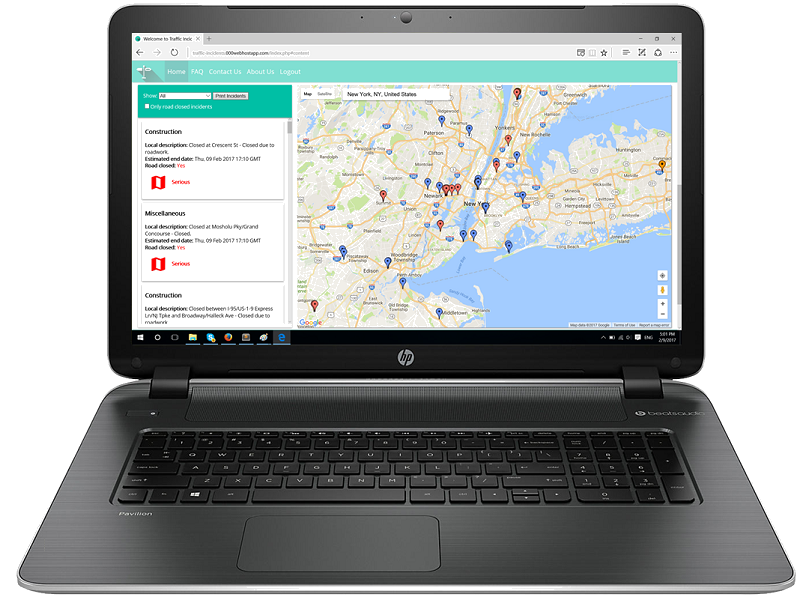
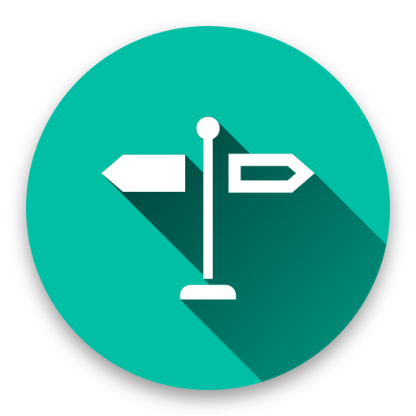

Traffic Incidents

I have worked on this project with Iskander Gaba as a group project for the web development and design course at the American University of Beirut. Traffic Incidents is a service that allows the user to fetch any incident nearby in an easy, simple and user-friendly manner.
To use the website, you are invited to create an account in order to start interacting with the website that gives regularly updated and reliable information.
This project involves the effective usage of the multiple programming languages and platforms such as JavaScript, PHP, and Jquery that interact with a database. The project additionally required extra knowledge which is beyond the scope of the course. This shows our interest in developing a fully functional website regardless of the limitations.
Traffic Incident website
To use the website, you are invited to create an account in order to start interacting with the website that gives regularly updated and reliable information.
This project involves the effective usage of the multiple programming languages and platforms such as JavaScript, PHP, and Jquery that interact with a database. The project additionally required extra knowledge which is beyond the scope of the course. This shows our interest in developing a fully functional website regardless of the limitations.
Traffic Incident website